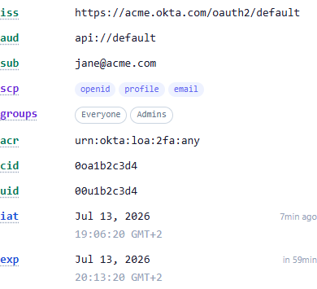
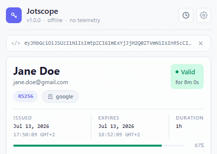
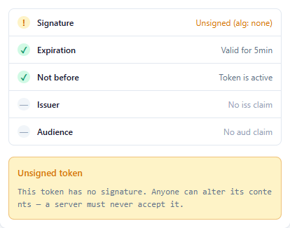
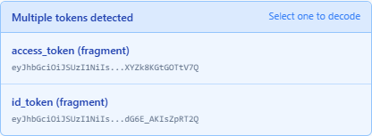
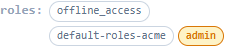

Claims in plain English
Colour-coded by type, with hover & keyboard tooltips (RFC 7519 + OIDC + vendor). scope, groups and roles render as chips.
Chrome extension · Manifest V3 · MIT
Paste a token and Jotscope decodes it instantly into a readable, colour-coded claim view. No servers, no tracking, no network calls. The source is what ships.
Offline by default. The only request it can make is an opt-in fetch of an issuer's public keys - off unless you turn it on.
See it in action
Paste, decode, verify - a quick narrated tour. Sound on if you like.
What it does
Every claim is typed, explained, and colour-coded - the way you'd read a token if you had the time.

Colour-coded by type, with hover & keyboard tooltips (RFC 7519 + OIDC + vendor). scope, groups and roles render as chips.
Keycloak's realm_access, Firebase's identities and other deep payloads render as a collapsible tree - recursive, any depth - instead of a wall of JSON.

A real-time countdown and an issued → expires bar. Watch the status shift Valid → Expiring → Expired as the clock runs down.

Clear verification states, including a prominent warning for unsigned alg: none tokens. Fetching the issuer's keys is the one network call - and only when you ask.

Paste a whole OAuth callback URL or a blob of text and Jotscope pulls the tokens out for you - with a picker when there's more than one.

admin, superuser or any *-admin is tinted and bolded, so a dangerous grant jumps out instead of hiding in the payload.
The whole point
Tokens carry identities, sessions, and secrets. Decoding one shouldn't ship it to someone's server. Jotscope does everything locally - and the code is small, vanilla, and unminified, so you can check that yourself.
Parsing and rendering happen entirely in the popup. No analytics, no telemetry, and zero runtime dependencies.
Read only when you click Paste or press Ctrl/Cmd+V - never on open, in the background, or on a timer.
History & settings live in your browser's localStorage - never synced, never sent. Cap it, clear it, or turn it off.
Signature verification can fetch an issuer's public JWKS - the single possible outbound request, off by default, and it sends no token data.
The only permission Jotscope requests. No host permissions, no <all_urls> - it can't see the pages you browse. Just the clipboard, and only on an explicit paste.
Free, open source, and offline by default. Pin it to your toolbar and never paste a JWT into a website again.